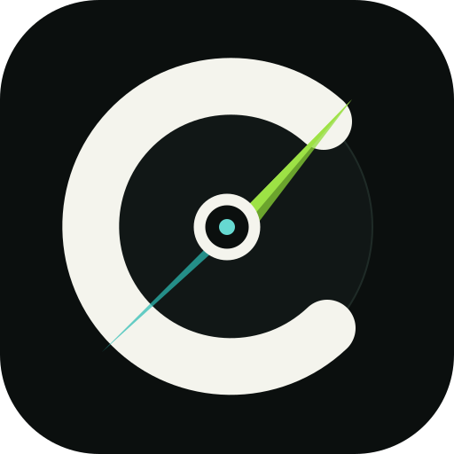

🔐 Meu radar—
—
ocorrências pessoais protegidas fora do painel público
Identificadores privados: não exibidos no site.
Central de TransiçãoRadar OficialVarredura automática de DOU e DODF para identificadores pessoais protegidos, atos institucionais da SEDES/DF e radares específicos de SEEDF/TJDFT. O acompanhamento da banca Quadrix, cronograma, inscrições e resultados da SEDES fica exclusivamente no módulo Pós-Prova do painel principal. Termos pessoais ficam protegidos no banco e não são enviados ao navegador.
ocorrências pessoais protegidas fora do painel público
Identificadores privados: não exibidos no site.atos cuja edição oficial é de hoje
Usa a data de publicação registrada no DOU/DODF.ocorrências que o radar encontrou hoje
Pode incluir publicação de hoje ou indexação tardia.publicações anteriores localizadas hoje pelo radar
Pode ocorrer por revarredura histórica ou indexação posterior da fonte.publicações oficiais recentes
Sem duplicar a mesma publicação.Aguardando leitura do banco.
—Busca manual por identificadores pessoais protegidos, com histórico e revisão de homônimos. Os resultados não ficam disponíveis na página pública sem o código de acesso.
Digite o código do Radar Web para criar uma sessão privada temporária. Depois do desbloqueio, o navegador guarda apenas um token aleatório — não o código.
A pesquisa envia somente os identificadores habilitados ao índice externo e valida a correspondência antes de gravá-la. Correspondência de identificador não confirma identidade.Os valores reais ficam criptografados. Nesta lista você vê apenas a versão mascarada; os valores completos só são usados no backend durante a pesquisa.
Você pode gerar um novo código aleatório ou definir um código próprio. O código atual nunca é recuperado do banco porque só o hash fica armazenado.
Resultados encontrados pelos identificadores cadastrados para pesquisa oficial. O conteúdo detalhado só aparece depois do desbloqueio.
Nesta página, SEDES/DF significa somente publicações oficiais no DOU/DODF e atos institucionais relacionados ao órgão. Cronograma da banca, inscrições, gabaritos e resultados da Quadrix ficam no Pós-Prova. SEEDF e TJDFT seguem filtrados para concurso/pré-edital. Quando a mesma publicação cair em mais de um radar, ela é agrupada em um único cartão.
O radar é um mecanismo de detecção e triagem. A versão certificada do diário oficial continua sendo a fonte jurídica definitiva da publicação.